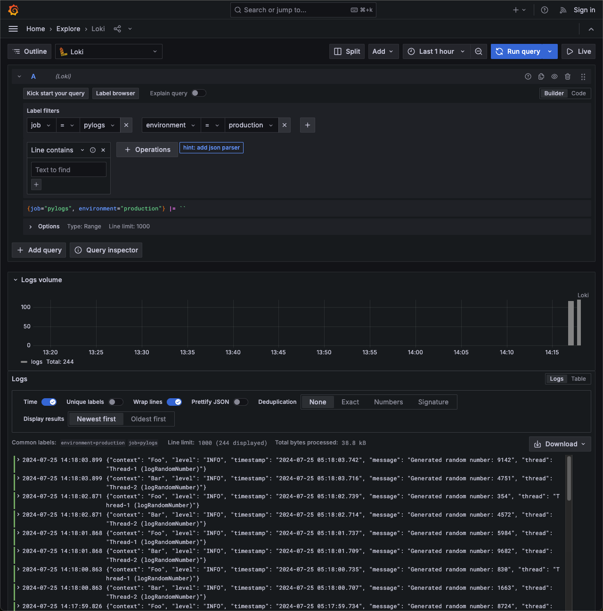

Loki
Integrating Python Applications with Grafana Loki
When aiming to send logs from your Python application to Grafana Loki, using a JSON format for logs can simplify label management and enhance log organization. logman facilitates this by leveraging Python’s standard logging module to perform JSON formatting and store log files that can be tailed by agents.
This guide will walk you through the process of setting up logman to send logs to Loki using both Promtail and Grafana Agent.
Why JSON Formatting?
JSON formatting allows for better structured logs, making it easier to parse and manage labels in Loki. With logman, you can seamlessly integrate JSON formatting into your Python application’s logging setup.
Setup and Deployment
In this section, we’ll use a simple Python application that generates random numbers and logs them. We’ll deploy this application and Promtail using Docker Compose. Promtail will track the log files and send them to Loki.
Step 1: Python Application
Create a simple Python application that logs random numbers. Save this as main.py:
import random
import time
import threading
from logman import LoggerFactory
class Foo:
def __init__(self) -> None:
self.logger = LoggerFactory.getLogger(self.__class__.__name__)
def logRandomNumber(self) -> None:
while True:
self.logger.info(f"Generated random number: {random.randint(1, 10000)}")
time.sleep(1)
class Bar:
def __init__(self) -> None:
self.logger = LoggerFactory.getLogger(self.__class__.__name__)
def logRandomNumber(self) -> None:
while True:
self.logger.info(f"Generated random number: {random.randint(1, 10000)}")
time.sleep(1)
if __name__ == "__main__":
foo = Foo()
bar = Bar()
# Create threads for Foo and Bar logging
foo_thread = threading.Thread(target=foo.logRandomNumber)
bar_thread = threading.Thread(target=bar.logRandomNumber)
# Start the threads
foo_thread.start()
bar_thread.start()
# Join the threads to the main thread to keep them running
foo_thread.join()
bar_thread.join()
Step 2: Docker Compose Setup
Create a docker-compose.yml file to define the services. This setup will include the Python application and Promtail.
version: '3.8'
services:
app:
build:
context: .
dockerfile: app.dockerfile
volumes:
- logs:/app/logs
environment:
- PYTHONUNBUFFERED=1
loki:
image: grafana/loki:2.9.2
ports:
- '3100:3100'
command: -config.file=/etc/loki/local-config.yaml
grafana:
environment:
- GF_PATHS_PROVISIONING=/etc/grafana/provisioning
- GF_AUTH_ANONYMOUS_ENABLED=true
- GF_AUTH_ANONYMOUS_ORG_ROLE=Admin
entrypoint:
- sh
- -euc
- |
mkdir -p /etc/grafana/provisioning/datasources
cat <<EOF > /etc/grafana/provisioning/datasources/ds.yaml
apiVersion: 1
datasources:
- name: Loki
type: loki
access: proxy
orgId: 1
url: http://loki:3100
basicAuth: false
isDefault: true
version: 1
editable: false
EOF
/run.sh
image: grafana/grafana:latest
ports:
- '3000:3000'
promtail:
image: grafana/promtail:2.9.2
volumes:
- logs:/var/logs
- ./promtail-config.yml:/etc/promtail/promtail-config.yml
command: -config.file=/etc/promtail/promtail-config.yml
volumes:
logs:
Tip
The provided docker-compose.yml file is an example configuration for development and testing purposes. For production, it is recommended to set up Grafana and Loki separately to better manage and scale your logging infrastructure.
Step 3: Promtail Configuration
Create a promtail-config.yml file to configure Promtail to send logs to Loki.
server:
http_listen_port: 9080
grpc_listen_port: 0
positions:
filename: /tmp/positions.yaml
clients:
- url: http://loki:3100/loki/api/v1/push
scrape_configs:
- job_name: logman
static_configs:
- targets:
- localhost
labels:
job: pylogs
__path__: /var/logs/*.log
environment: production
Tip
Ensure that you customize the clients URL to match your Loki server’s address, especially if it’s hosted remotely or under a different port.
clients:
- url: http://<YOUR_LOKI_SERVER>:<YOUR_LOKI_PORT>/loki/api/v1/push
scrape_configs:
- job_name: <YOUR_JOB_NAME>
static_configs:
- targets:
- <YOUR_TARGET>
labels:
job: <YOUR_JOB_LABEL>
__path__: <YOUR_LOG_PATH>
...
Step 4: Build and Run
Build and run the Docker Compose setup to start the Python application and Promtail.
docker-compose up --build
This command builds the Docker images and starts the containers. Promtail will start tailing the log files generated by the Python application and send them to Loki.
Step 5: Viewing Logs in Grafana
After starting the Docker Compose setup, you can view the logs in Grafana. Follow these steps:
Open your web browser and navigate to http://localhost:3000.
You will be automatically logged in as an anonymous user with admin privileges.
In the Grafana dashboard, click on the Explore icon on the left sidebar.
In the Explore view, select Loki as the data source from the dropdown at the top.
Enter the following query to view the logs:
{job="pylogs", environment="production"}
Press Run query to fetch and display the logs from Loki.
You should see the logs generated by your Python application, formatted as JSON, and sent to Loki by Promtail. This allows you to monitor your application logs in real-time and utilize Grafana’s powerful visualization and querying capabilities.
With this setup, you have successfully integrated your Python application’s logging with Grafana Loki, enabling efficient log management and analysis.
Summary
Using logman with JSON formatting simplifies the management of logs in your Python application. By integrating with tools like Promtail or Grafana Agent, you can efficiently send these logs to Grafana Loki for centralized logging and monitoring.
For more detailed examples and advanced configurations, explore the individual modules and classes in the documentation. If you have any questions or need further assistance, please feel free to reach out to our support team.